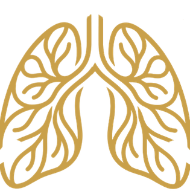

دکتر سپیده صفانوایی
متخصص داخلی و فوق تخصص بیماریهای ریه

فوق تخصص ریه و ICU از بیمارستان مسیح دانشوری، با دورهی تکمیلی اینترونشنال ریه؛ عضو هیات علمی دانشگاه علوم پزشکی مازندران. پذیرش بیماران ریه، داخلی و دیابت در مطب آمل.
- پزشک از ۱۳۷۸
- نظام پزشکی ۵۱۵۱۰
- عضو ERS و ATS
مطب آمل · سبزه میدان، ساختمان پزشکان آنیتا · پذیرش روزانه، شیفت عصر
سوابق علمی و حرفهای
از تخصص داخلی در ۱۳۷۸ تا دورهی اینترونشنال ریه در بیمارستان مسیح دانشوری؛ پشت هر کارت، محل آن آمده است.
- ۱۳۸۷عضو انجمن علمی ریه اروپا (ERS)
- ۱۳۸۷عضو انجمن علمی ریه آمریکا (ATS)
- ۱۳۸۷عضو انجمن علمی ریه ایران
- بیش از ۳۰ مقاله علمی و ۲ کتاب در مجلات معتبر خارجی